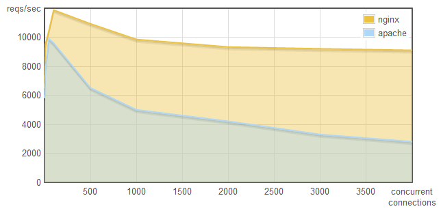
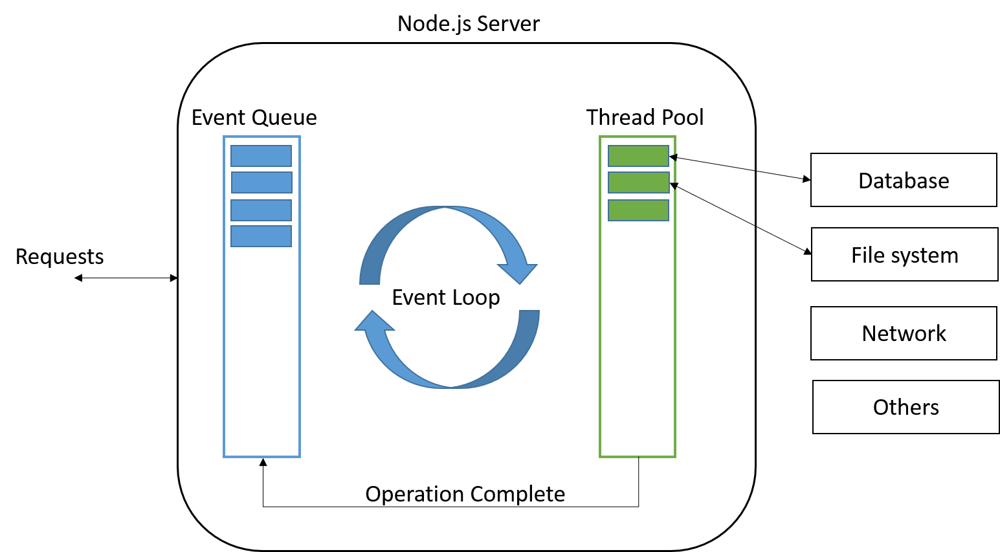

Utn Rosario
TTADS
Curso Fullstack polo tecnologico - UTN
Multiprogramacion - Concurrencia
- Procesos
- Hilos
- Hilos verdes (green threads)
- Corutinas
- Loop de Eventos
- Preemtiva
- Cooperativa
Performance en Web Servers
ngnix vs apache memoria

Performance en Web Servers
ngnix vs apache requests por segundo

var result = db.query('SELECT * FROM clientes');
result.forEach(function(each){
console.log('fila:', each);
});
node.js
Infraestructura sin bloqueo de entrada y salida, puramente orientada a eventos de alta performance.
- Js para el server
- Maquina virtual V8 de Google
- Entrada y salida sin bloqueos y orientada a eventos
- Modulos commonJs
require('')
Event Loop
 imagen tomada de abdelraoof.comCallbacks para todo
Ninguna funcion debe realizar la E/S directamente. Siempre debe haber una callback.
Bajo nivel
Soporte para TCP, HTTP, DNS, POSIX
Ejemplo callback
var fs = require('fs');
fs.readFile(process.argv[2], function (err, data) {
var palabras,
lineas = 0,
incremento;
if (err) {
return console.error(err);
}
palabras = data.length > 0 ? 1 : 0;
data.forEach(function (each) {
if (each !== 32 && incremento === 1) {
palabras = palabras + 1;
incremento = 0;
}
switch(each) {
case 10: // LF
lineas = lineas + 1;
break;
case 32: // Space
incremento = 1;
break;
}
});
console.log('Letras', data.length);
console.log('Palabras', palabras);
console.log('Lineas', lineas);
});
Ejemplo Stream
var fs = require('fs');
var stream = fs.createReadStream(process.argv[2]);
var palabras = 0,
lineas = 0,
letras = 0;
stream.on('data', function (data) {
var incremento = 0;
letras = letras + data.length;
palabras = data.length > 0 && palabras === 0 ? 1 : 0;
data.forEach(function (each) {
if (each !== 32 && incremento === 1) {
palabras = palabras + 1;
incremento = 0;
}
switch(each) {
case 10: // LF
lineas = lineas + 1;
break;
case 32: // Space
incremento = 1;
break;
}
});
});
stream.on('end', function () {
console.log('Letras', letras);
console.log('Palabras', palabras);
console.log('Lineas', lineas);
});
Event Emitter
const myEmitter = new MyEmitter();
myEmitter.on('event', function(a, b) {
console.log(a, b, this);
// Prints:
// a b MyEmitter {
// domain: null,
// _events: { event: [Function] },
// _eventsCount: 1,
// _maxListeners: undefined }
});
myEmitter.emit('event', 'a', 'b');
Ejemplo HTTP
var http = require('http');
var server = http.createServer();
server.on('connection', function(c) {
// 'connection' listener
console.log('client connected');
c.on('end', function() {
console.log('client disconnected');
});
});
server.on('request', function(req, res){
console.log(req.headers);
res.writeHead(200, { 'Content-Type': 'text/html'});
res.write('Hola ' + req.url + Math.random());
res.end();
});
server.on('error', function (err){
throw err;
});
server.listen(8120);
Ejercicio
Crear un servidor web estatico que dada una carpeta que ingresa por linea de comandos se abre un servidor en localhost:8118 que sirva los archivos html y css de forma estatica.
Tener en cuenta el header Content-Type para cada uno de los archivos.
Si el cliente web hace un request por un directorio no se debe mostrar el listado de archivos, solamente si el url coincide con un archivo concreto.
Si el url no coincide con ningun archivo devolver un status 404.
Opcional 1: Agregar la posibilidad de servir imagenes.
Se puede usar el modulo mime-types para obtener el content type de los archivos.
usar modulos http, fs y leer los archivos de forma asincrona.
Links
Express.js
Framework web para HTTP
- Simple
- Rapido
- Asincrona
No proporciona una estructura para la app
var express = require('express');
var app = express();
app.get('/', function (req, res) {
res.send('Hello World!');
});
app.listen(3000, function () {
console.log('Example app listening on port 3000!');
});Rutas
// app.METHOD(PATH, HANDLER)
app.get('/', function (req, res) {
res.send('Hello World!');
});
app.post('/', function (req, res) {
res.send('Got a POST request');
});
app.put('/user', function (req, res) {
res.send('Got a PUT request at /user');
});
app.delete(/.*-user/, function (req, res) { // regexp
res.send('Got a DELETE request at /user');
});
app.all('/user', function (req, res) {
res.send('Got a DELETE request at /user');
});
app.get('/users/:userId/books/:bookId', function(req, res) { // Route parameters
res.send(req.params);
});
Middleware
Funciones de diferente tipo con acceso a los objetos Request, Response y la funcion next(). Son listas de funciones que se ejecutan antes de procesar la funcion de resolucion de la ruta de un request.
- Aplicacion
- Ruta
- Error
- Incorporadas
- Externas
Una aplicacion expressjs tiene una o varias listas de funciones middleware
Middleware
Un determinado request y response pasan por las diferentes funciones de la lista de middleware hasta que el ciclo termina.
- Ejecutar codigo
- Hacer cambios en el request y response
- Terminar el ciclo de respuesta
- Llamar a la siguiente funcion del stack
Middleware de aplicacion
app.use(function (req, res, next) { // Sin punto de montaje (mount point)
console.log('Time:', Date.now());
next();
});
// Montado en '/user/:id'
app.use('/user/:id', function (req, res, next) {
console.log('Request Type:', req.method);
next();
});
// Montado en GET '/user/:id'
app.get('/user/:id', function (req, res, next) {
console.log('Request Type:', req.method);
next();
});
Request - Response
Router
define un conjunto de rutas y middleware como una mini app.
var express = require('express');
var router = express.Router();
// middleware that is specific to this router
router.use(function timeLog(req, res, next) {
console.log('Time: ', Date.now());
next();
});
// define the home page route
router.get('/', function(req, res) {
res.send('Birds home page');
});
// define the about route
router.get('/about', function(req, res) {
res.send('About birds');
});
app.use('/birds', router);Manejo de Errores
app.use(function(err, req, res, next) {
console.error(err.stack);
res.status(500).send('Something broke!');
});var bodyParser = require('body-parser');
var methodOverride = require('method-override');
app.use(bodyParser.urlencoded({
extended: true
}));
app.use(bodyParser.json());
app.use(methodOverride());
app.use(logErrors); // Se definen al final
app.use(clientErrorHandler);
app.use(errorHandler);
function logErrors(err, req, res, next) { // se pueden encadenar usando next()
console.error(err.stack);
next(err);
}
Middleware comun
- bodyParser, compression, cookie-parser, cookie-session, cors, multer
- morgan, response-time,
- serve-index, serve-favicon, serve-static
- helmet
Ejercicio
Tomar la app de Usuarios y el repo angular-express Y crear:
- el endpoint
/api/v1/usuarios/:idcon los metodos get, put, post y delete correspondientes a rest con sequelize - el endpoint
/api/v1/search-user/?q=queryStringque me permita buscar usuarios por todos sus campos - Implementar el codigo angular para consumir el primer endpoint y persistir los usuarios
- Implementar el codigo angular para una pagina de busqueda de usuarios que busque por cualquier campo